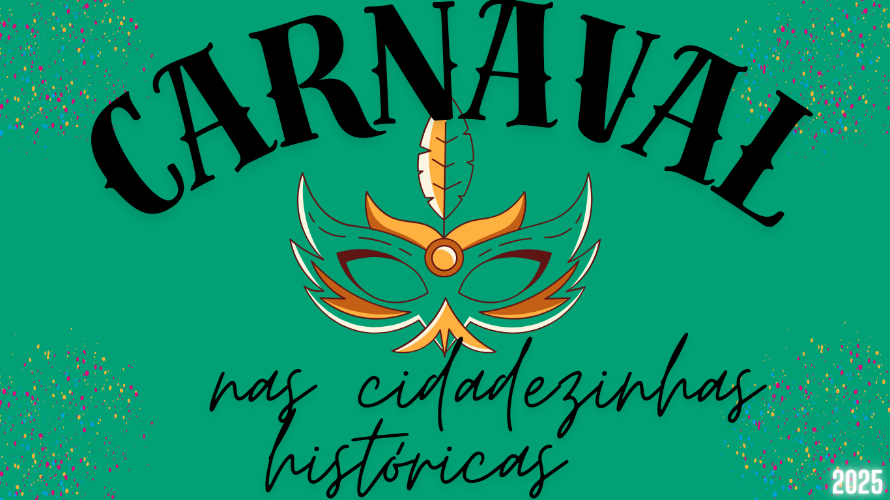

carnaval nas Cidadezinhas históricas
O Carnaval nas cidades históricas do Brasil é uma experiência única! Cada uma dessas cidades carrega consigo a tradição, a cultura e a história do nosso país, o que torna a festa ainda mais especial. Em locais como Ouro Preto, Diamantina, Paraty, Olinda e outras cidades, o Carnaval é celebrado com um toque de folclore e muita energia, preservando as raízes culturais da região. 1. Ouro Preto (MG): O Carnaval de Ouro Preto é conhecido por suas blocos de rua animados, com um toque boêmio, além das ladeiras íngremes e do charme colonial da cidade. A festa mistura música, dança e tradição, com blocos de marchinhas e frevo, além de muita animação nas ruas estreitas da cidade histórica. 2. Diamantina (MG): Diamantina oferece um Carnaval de rua com uma forte influência das tradições do interior de Minas Gerais. Os foliões se reúnem nas ruas para celebrar com marchinhas e músicas típicas, além de blocos que fazem alusão à herança cultural local. A cidade, com suas construções coloniais e paisagens deslumbrantes, se transforma em um grande palco de alegria. 3. Paraty (RJ): Paraty, além de ser uma das cidades mais bonitas do Brasil, tem um Carnaval que mistura tradição e modernidade. O centro histórico da cidade ganha vida com blocos de rua, desfiles de fantasias e apresentações musicais. A festa nas ruas de pedras e o visual da baía tornam o ambiente ainda mais especial. 4. Olinda (PE): Talvez uma das cidades históricas mais famosas pelo seu Carnaval, Olinda encanta com seus bonecos gigantes, blocos de frevo e uma energia contagiante. O centro histórico, tombado como patrimônio mundial da humanidade, se enche de cor e música, e as ladeiras são tomadas por foliões de todas as idades. 5. São João del-Rei (MG): Em São João del-Rei, o Carnaval mistura a história da cidade com a animação dos blocos de rua. A cidade, com seu patrimônio colonial bem preservado, oferece uma festa tradicional com marchinhas, samba e outros ritmos, sendo uma excelente opção para quem busca um Carnaval mais tranquilo, mas com muito charme. Essas cidades têm em comum a celebração do Carnaval de maneira que resgata a cultura e as tradições locais, tornando o evento uma verdadeira viagem no tempo e na história do Brasil. Cada cidade tem sua particularidade, mas todas compartilham a alegria e a energia dessa festa tão querida!
